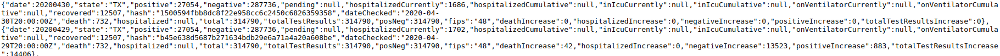
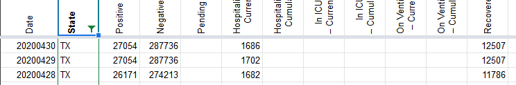
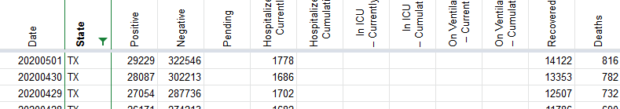

TX some of 4/30 data is the same as 4/29 in the states historical API endpoint
I noticed that the data for TX is the same for some of the fields in the JSON file. Looks like it is affecting the positive, negative, death, recovered, total, PosNeg, and the associated increases i.e., deathIncrease, positiveIncrease etc.
I’m doing some analysis and this data quality issue is causing me to do some manual work. This may be the same for other states as well. Can this be fixed? 
Comments
@muamichali that looks to be consistent with what I hardcoded yesterday, thanks for updating!
If this happens again in the future, how can I help troubleshoot? Is this y’all manually updating or what? I have little knowledge of APIs and I genuinely want to learn .
Hi @mathcoder3141
That’s great
We have a data entry team manually check and enter the data. TX updated late that day so it missed our publication cut off. You are always welcome to let us know here when the data doesn’t match the state data and we will look into it as soon as we can.
Hi @mathcoder3141 Thanks for reporting this issue. We are going to update the 4/30 data based on https://covidtracking.com/screenshots/TX/TX-20200430-182114.png You should see the correct data reflected on the site this afternoon.
Before 
After 